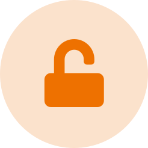

Moab is a kit designed for our customers and partners to get
hands-on
how to teach a machine skills, like to balance a ping pong ball.
Moab is an application of both
Moab is a motion control lab demonstrating
Moab is a robot designed to help engineers and devlopers
Get details about this open source balancing robot designed to help
engineers and developers learn how to build real-world autonomous control
systems with Project Bonsai.
Balance using a trained Bonsai brain,
visualize them in simulation and deploy them to the physical bot.
LEARN MORE ABOUT THE SOFTWARE POWERING THE BRAINS

¶ Open-sourced, so you can tinker away.
Everything from the 3D Sketchfab Models to the hardware & OS are available to everyone.
Tutorials & Set-up
You don't need the physical device to get started—you can play with a virtual Moab in the sim right now!